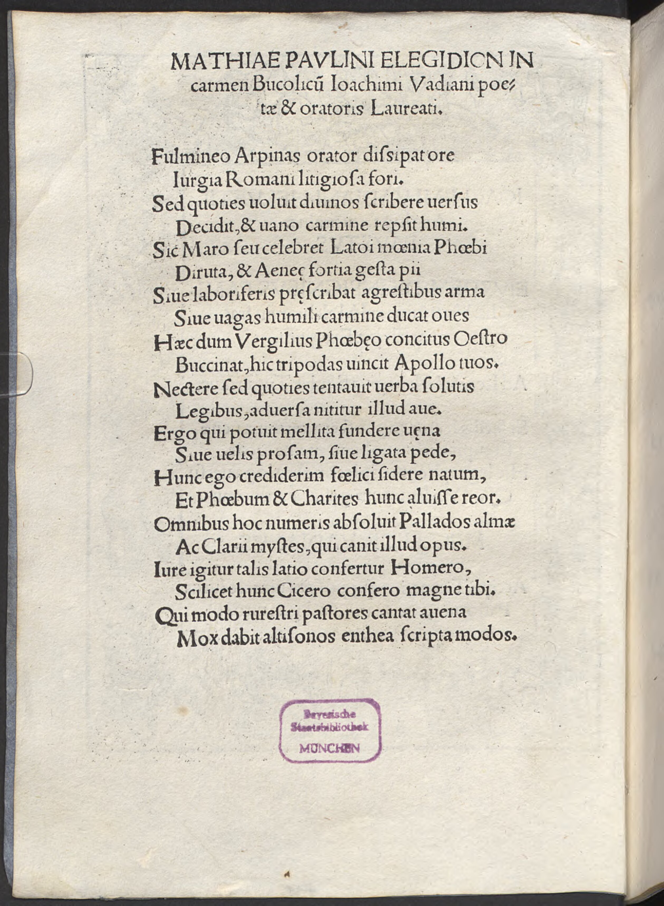

Watt 17 (Matthias Paulinus)
Faksimile

Transkription
Matthiae Paulini elegidion in carmen Bucolicum Ioachimi Vadiani poetae et oratoris Laureati.
Fulmineo Arpinas orator dissipat ore
Iurgia Romani litigiosa fori.
Sed quoties voluit divinos scribere versus
Decidit, et vano carmine repsit humi.
Sic Maro seu celebret Latoi moenia Phoebi
Diruta, et Aeneae fortia gesta pii
Sive laboriferis praescribat agrestibus arma
Sive vagas humili carmine ducat oves
Haec dum Vergilius Phoebeo concitus Oestro
Bucinat, hic tripodas vincit Apollo tuos.
Nectere sed quoties tentavit verba solutis
Legibus, adversa nititur illud ave.
Ergo qui potuit mellita fundere vena
Sive velis prosam, sive ligata pede,
Hunc ego crediderim felici sidere natum,
Et Phoebum et Charites hunc aluisse reor.
Omnibus hoc numeris absolvit Pallados almae
Ac Clarii mystes, qui canit illud opus.
Iure igitur talis latio confertur Homero,
Scilicet hunc Cicero confero magne tibi.
Qui modo rurestri pastores cantat avena
Mox dabit altisonos enthea scripta modos.
Übersetzung
Eine kleine Elegie des Matthias Paulinus auf das bukolische Gedicht des Joachim Watt, des lorbeergekrönten Dichters und Redners.
Der arpinische Redner verbreitet die streitvollen Prozesse des römischen Forums in einer Sprache, die brilliant wie ein Blitz ist. Aber sooft er göttliche Verse schreiben wollte, scheiterte er und kroch mit einem leeren Gedicht am Boden herum. So hingegen dürfte Maro die eingerissenen Mauern des Phoebus, des Sohns der Latona, und die tapferen Taten des pflichtbewussten Aeneas preisen oder die Waffen den Strapazen ertragenden Landarbeitern voransestzen oder umherstreifende Schafe mit einem niedrigen Lied führen. Während Vergil, erregt durch die (poetische) Raserei des Phoebus, dies mit der Trompete verkündet, gewinnt dieser Apoll deine Dreifüße. Aber sooft er versucht hat, Worte unter gelösten <Vers->gesetzen zu verbinden, müht er sich um jenes unter ungünstigen Vorzeichen ab. Wer also aus honigsüßer Ader entweder Prosa oder mit gebundenem <Vers>fuß dichten konnte, von dem glaube ich wohl, dass er unter einem glücklichen Stern geboren wurde und meine, dass diesen sowohl Phoebus als auch die Chariten erzogen haben. Zu Ende gebracht hat dies in allen Metren der Priester der gütigen Pallas und des Klariers, der jenes Werk singt. Deshalb wird ein solcher zu Recht mit einem lateinischen Homer verglichen, freilich vergleiche ich diesen mit dir, großer Cicero. Dieser singt gerade <noch> von Hirten mit ländlicher Rohrflöte, bald wird er inspirierte Schriften, erhaben tönende Lieder, <von sich> geben.
Metadaten
| Titel des Gedichts: | Matthiae Paulini elegidion in carmen Bucolicum Ioachimi Vadiani poetae et oratoris Laureati. |
| Autor der Gedichts: | Matthias Paulinus (Matthias Paulinus) |
| Containerwerk: | Ioachimi Vadiani Helvetii Aegloga, cui titulus Faustus, Wien 1517 |
| Autor des Containerwerks: | Joachim Watt (Joachim Vadianus) |
| Gattung des Containerwerks: | Ekloge, Bukolik |
| Erscheinungsjahr: | 1517 |
| Verschlagwortung: | Elegie, Cicero, Rhetorik, Rede, Forum, Vers, Prosa, Dichtung, Vergil, Apoll, Latona, Aeneas, Landbau, Hirten, Bukolik, Epos, Lehrgedicht, Aeneis, Georgica, Eclogae, Dreifuß, Sieg, Wettbewerb, Exemplum, Dichter, Geschichte, Chariten, Honig, Süße, Poetologie, Athene, Homer, Flöte, Vergleich |